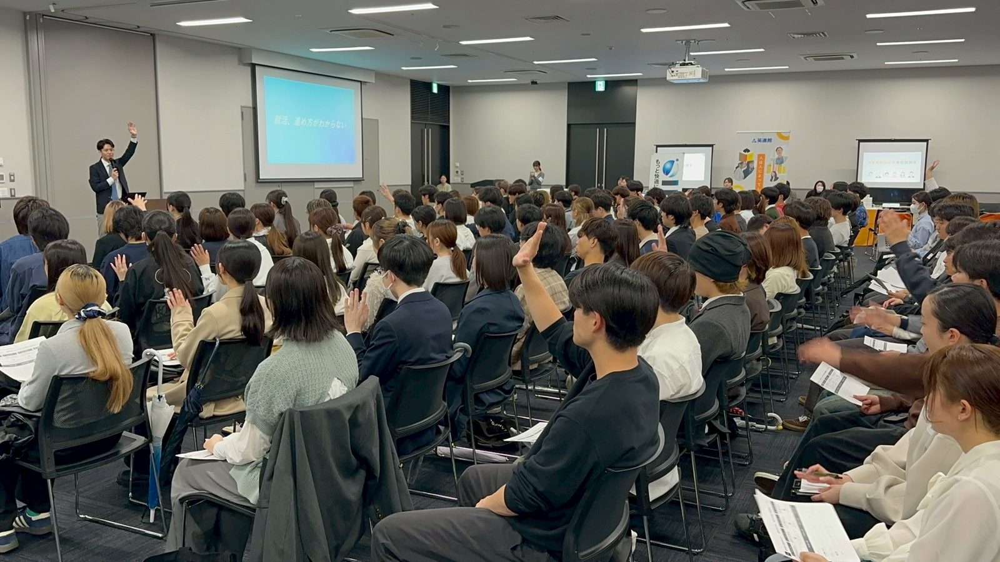
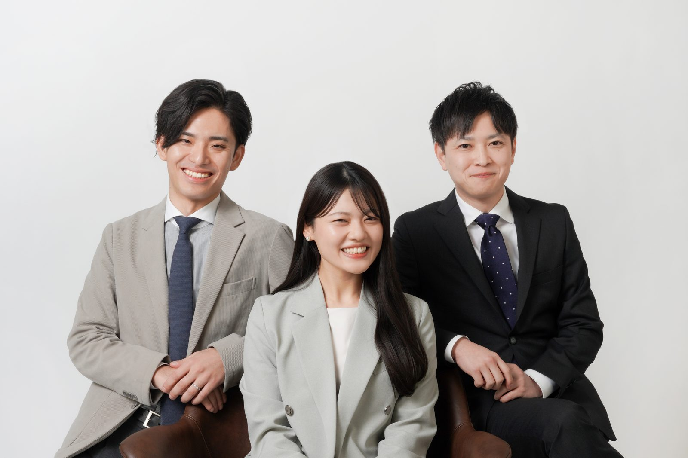

月3万円〜
部分的な人事業務をカスタマイズして委託。
応募者対応、スカウト、面接調整、採用改善まで。足りない採用機能を、必要な業務・期間だけ補えるRPOサービスです。
採用担当者を増やす前に、今ある採用業務を整理しませんか。
採用業務に追われて、
本来やるべきことが後回しになっていませんか。
一人、あるいは少人数の採用担当者ほど、日々の実務に時間を取られがちです。
こうした状態が続くと、採用担当者が一人しかいない企業や、業務が増えても増員してもらえない企業ほど、本来注力すべき採用企画や改善に手が回らなくなります。
採用が止まると、何が起きるか。
人がいないから採れないのではなく、採用活動を動かし続ける時間と機能が足りていないケースがほとんどです。
実務負担が積み重なる
対応・調整・集計が担当者一人に集中する
採用活動そのものが止まる
スカウトや原稿更新など「動かす業務」が後回しに
応募・面接・承諾に影響する
母集団と選考の歩留まりが同時に落ちていく
採用難の中で競争力を失う
片手間運用のままでは他社との差が広がる
採用担当者を増やす前に、
比較しておきたいこと
正社員を採用すべき企業もあります。まずは自社がどちらに当てはまるかを整理しましょう。
正社員採用が向いているケース
- 年間を通して大量採用がある
- 毎年一定数の採用を継続する
- 採用業務量が安定している
- 社内に専任チームを構築したい
RPOが向いているケース
- 採用人数が時期によって変動する
- 欠員発生時だけ業務が増える
- 新卒採用を新しく始める
- 採用担当者が退職・不在になった
- 一部業務だけリソースが足りない
採用担当者を雇うべき企業もあります。しかし、採用量が変動する企業が、常にフルタイムの専門人材を抱える必要はありません。
AIKASUは、人ではなく
「採用機能」を提供します。
採用プロセスを工程ごとに分解し、必要な工程だけを選んで依頼できます。
すべてを依頼する必要はありません。必要な工程だけをチェックして、部分的にご依頼いただけます。
採用担当者にしかできない仕事を、
後回しにしないために。
AIKASUは採用担当者の仕事を奪うのではなく、実務を巻き取ることで判断業務に集中できる状態をつくります。
採用担当者が担う業務
- 経営・現場との調整
- 人材要件の最終判断
- 候補者への魅力づけ
- 採用の合否判断
- 社内文化の伝達
- 入社後の受け入れ
AIKASUが補う業務
- 採用実務・日程調整
- スカウト運用
- 応募者対応
- 数値集計・分析
- 採用プロセス改善
- マニュアル作成
実務を巻き取るだけでなく、
数値の変化まで見ます。
依頼いただいた業務が、どの指標の改善につながるかを明確にしてご報告します。
| 実行する業務 | 改善を目指す指標 |
|---|---|
| 求人原稿の改善 | 閲覧数・応募率 |
| スカウト運用 | 送信数・返信率 |
| 応募初動対応 | 面接設定率 |
| 面接リマインド | 面接実施率 |
| 説明会内容の改善 | 選考移行率 |
| 面接官トレーニング | 選考通過率・辞退率 |
| 内定者フォロー | 内定承諾率 |
| エージェント管理 | 推薦数・採用単価 |
診断して、実行して、改善して、
最後に仕組みを残す。
採用課題診断
採用人数・職種・期限・現在の体制を確認し、どこで採用が止まっているかを可視化します。
内製・外注の仕分け
社内に残す判断業務と、AIKASUに任せる実務、将来自社に戻す業務を整理します。
実行
整理した業務のうち、必要なものだけ支援を開始します。
月次改善
採用KPIを確認し、翌月の改善施策を一緒に決定します。
仕組み化
文面・基準・業務フロー・マニュアルとして型に残します。
移管・部分継続
自社運用への移管、一部継続、繁忙期のみの利用など、終了後の形も選べます。
支援事例
実績データが確定次第、数値とあわせて公開してまいります。以下は支援内容のイメージです。
支援前の状況
- 合同説明会の参加者数は確保できている
- 自社説明会への移行率が低い
- 学生が興味を持てない理由を把握できていない
AIKASUの支援内容
- 参加学生へのヒアリング
- 説明会内容の見直し
- 参加後のフォロー導線の設計
- 選考移行率の計測
支援が終わっても、
採用の型は会社に残ります。
採用手段ごとの特徴
| 比較軸 | 正社員採用 | 人材紹介 | 求人広告 | AIKASU(RPO) |
|---|---|---|---|---|
| 費用構造 | 固定費(給与) | 成功報酬 | 掲載料(前払い) | 依頼業務に応じた変動費 |
| 採用量の変動対応 | しづらい | 対応しやすい | 対応しやすい | 対応しやすい |
| 立ち上がりの速さ | 採用に数ヶ月 | 比較的早い | 掲載後すぐ | 診断後すぐ着手可 |
| 社内ノウハウの蓄積 | 蓄積しやすい | 蓄積しにくい | 蓄積しにくい | 仕組み化して残す |
| 部分的な依頼 | 不可 | 不可 | 不可(媒体単位) | 業務単位で可能 |
社内でRPOを提案する際に、
説明しやすい3つのポイント
固定費ではなく、必要な期間だけ利用できる
常にフルタイムの専門人材を抱える必要がなく、繁忙期・欠員時など必要なタイミングだけ活用できます。
人材紹介だけに依存せず、採用チャネルを増やせる
スカウトや母集団形成を並行して進められるため、紹介会社への依存と採用単価の上昇を抑えられます。
支援終了後も、仕組みとノウハウが残る
業務代行だけで終わらせず、テンプレートやマニュアルとして社内に資産化します。
上司・経営陣への共有用資料をご用意しています
費用対効果や導入の考え方をまとめた資料をダウンロードいただけます。
必要な業務量と
専門性に合わせて設計します。
料金は以下の要素をもとに個別にお見積りします。決まった金額を掲載せず、状況に応じてご提案します。
業務単位プラン
特定の実務だけを、必要な分だけ依頼したい企業向け。
短期プロジェクトプラン
新卒採用・繁忙期など、期間を区切って集中支援を受けたい企業向け。
採用チーム伴走プラン
診断から仕組み化まで、継続的に伴走してほしい企業向け。
ご相談から支援開始までの流れ
お問い合わせ
フォームより現状をご連絡
無料ヒアリング
オンラインで状況を確認
採用課題の整理
止まっている箇所を可視化
ご提案・お見積り
依頼範囲と費用をご提示
ご契約
業務範囲・期間を確定
支援開始
実行と月次改善を開始
よくある質問
可能です。応募者対応やスカウト運用など、1業務単位からご依頼いただけます。
可能です。繁忙期や欠員発生時など、短期間のご利用にも対応しています。
変更の必要はありません。現在お使いのツールに合わせて支援いたします。
対応可能です。母集団形成から選考移行の改善まで支援いたします。
対応可能です。職種・拠点数に応じてご提案します。
ご相談いただけます。体制づくりの段階からご一緒します。
問題ありません。診断の中で要件整理からサポートします。
自社運用への移管、一部継続、繁忙期のみの再利用などから選べます。
文面・基準・マニュアルなどの形で、支援終了後も社内に残ります。
可能です。オンラインで全国対応しており、九州エリアの新卒採用には特に強みがあります。
求人を出すだけでは届かない、
九州の学生・企業との接点をつくります。

地域の接点づくりから支援します。

実務を熟知したメンバーが、
直接支援します。
丸投げの外注ではなく、採用実務と改善の両方を理解したメンバーが、貴社の採用チームの一員として動きます。
今の採用業務を、
一度整理してみませんか。
すべてを外部に任せる必要はありません。現在の採用業務を確認し、社内で続ける業務と、外部の力を活用した方がよい業務を一緒に整理します。
日程調整ページから、そのまま無料相談の日時を予約いただけます。